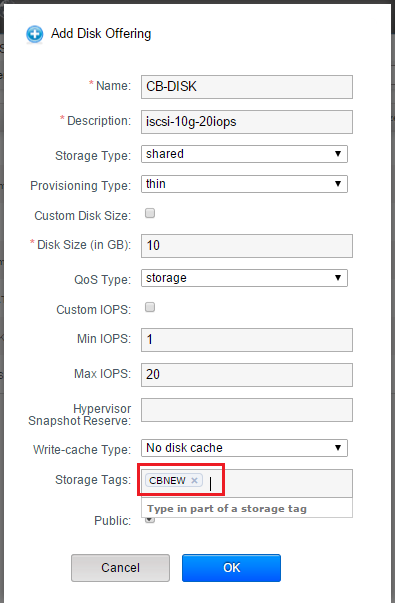

CloudByte ElastiStor plug-in for Apache CloudStack
Introduction
Apache CloudStack administrators can perform various tasks, performed using CloudByte ElastiCenter, in the CloudStack management UI.
CloudByte provides a plug-in, CloudByte ElastiStor plug-in for Apache CloudStack, to perform the following ElastiStor tasks:
- Create Account
- Provision storage
- Manage QoS properties for the primary storage (VSM) and Storage Volumes
- Set up iSCSI and NFS primary storage
The current release supports iSCSI and NFS protocols on the following Hypervisors: Xen, VMware, KVM.
The following figure illustrates how the plug-in integrates with Apache CloudStack.
The following topics explain how to install and use the ElastiStor plug-in for CloudStack.
Before you use the plug-in features, you must use ElastiCenter to configure your storage infrastructure till creating a Pool. That is, set up the first four items in the following illustration. The remaining configurations can be performed using the CloudStack user interface.
Prerequisites
- Install CloudStack 4.5.1. Refer CloudStack Installation .
- CloudByte ElastiStor 1.4 is up and running.
-
Download the
cloudStack.zipfolder from ElastiStor Plug-ins. The folder has the following files:- system.js
- docs.js
- install.sh
- You have the ElastiStor Storage set up till the Pool level.
Move the JavaScript files
Before you install the CloudByte ElastiStor Apache CloudStack plug-in, you must move the JavaScript files. Move the following files in scripts folder to the location /usr/share/cloudstack-management/webapps/client:
- system.js.gz
- docs.js.gz
Installing the plug-in
- Log in to CloudStack management server terminal.
- Edit the properties file named
command. For details, see - Extract the folder
(cloudStack.zip)you downloaded to the root directory. - In the extracted folder (cloudStack), run the following command to install the plug-in:
./install.sh
Edit properties file
Add the following to the file command.properties in the location /usr/share/cloudstack-management/webapps/client/WEB-INF/classes
changeVolumeProperties=15
listElastistorPool=15
listElastistorVolume=15
listElastistorInterface=15
Connecting CloudByte ElastiCenter to Apache CloudStack
- In the CloudStack interface, click Global Settings in the left pane.
- In the Search tab, specify
CloudByte. - Specify the following in the highlighted fields (in the following figure):
cloudbyte.management.apikey- Specify the ElastiCenter API key. For details on how to generate the API key, seecloudbyte.management.ip- Specify the ElastiCenter IP address.
Add a Domain (Account)
A Domain in CloudStack corresponds to Account in ElastiCenter. By default, the Domain ROOT exists in CloudStack (and a corresponding Account with the name ROOT in ElastiCenter). The new domain must be created under the default Domain ROOT.
- In the CloudStack user interface, click Domains in the left pane.
- Click Add Domain icon (highlighted in the following screen).
- Specify the required details and then click OK.
Provisioning storage
Add a Primary Storage (VSM)
Primary storage in CloudStack corresponds to VSM in ElastiCenter. When you add primary storage, a VSM with the same name is created in ElastiCenter and the Domain that you select (
Note: If an Account with the same name already exists, only a VSM is created after adding the primary storage.
- In the CloudStack User Interface home page, click Infrastructure and then click View All in Primary Storage.
- Click Add Primary Storage and then enter the required details.
| Option | Description |
| Scope | Only the scope cluster is supported. |
| Zone | The Zone where you create the primary storage. |
| Pod | The Pod where you create the primary storage. |
| Cluster | The cluster where you create the primary storage. |
| Name | Name of the storage device (VSM in ElastiStor). |
| Storage Tags | Comma-separated list of tags for the storage device. Must be a super set of the tags on your disk offerings. |
| Provider | Select CloudByte from the drop-down list. |
| Pool | Select a Pool from the drop-down list. |
| Capacity | Specify capacity for primary Storage in GB. |
| IOPS | IOPS for the primary Storage. |
| VSM IP | IP address of the VSM. |
| Subnet | Specify a valid numeric value. |
| VSM Interface | Select an active interface from the drop-down list. |
| Domain | Select a from the drop-down list. |
The following figure shows how the VSM CB-PRIMARY-VSM is created on CloudStack User Interface appears in ElastiCenter.
Add Disk Offering
Add disk offering to map the Storage Volume to the primary storage.
- In the CloudStack User Interface, click Service Offerings.
- In the following page, for Select offering, choose Disk offerings and then click Add Disk Offering.
- In the following page, provide the required details and complete the procedure.

| Option | Description |
| Name | Specify a name for the offering. |
| Description | Short description of the offering that can be displayed to users. |
| Storage Type | Type of disk for the VM. Select Shared, which is the storage accessible by way of NFS. |
| Custom Disk Size |
Enable: User has the option to specify the size of disk while adding the Storage Volume. Disable: Select the size manually in Disk Size tab. |
| Disk Size | Appears only if custom disk size is not enabled. Define Volume size in GB. The value must correspond with the Primary storage. |
| QoS Type | Select Storage. |
| Custom IOPS | If enabled, user has the option to specify IOPS while adding the Storage Volume. |
| Min IOPS | Appears only if custom IOPS is disabled. Defines minimum volume IOPS. |
| Max IOPS | Appears only if custom IOPS is disabled. Defines maximum volume IOPS (should not exceed the IOPS of the corresponding primary storage) |
| Hypervisor Snapshot Reserve | Percentage of the size of the root disk. If the root disk is 20 GB and Hypervisor Snapshot Reserve is 200%, the storage volume that backs the storage repository is sized at 60 GB (20 GB + (20 GB * 2)). |
| Storage Tags | Comma-separated list of attributes that must be associated with the primary storage for the disk. This must match the corresponding tags of the primary storage. |
| Public | Disable the option. |
| Domain | Select the sub domain from the drop-down list in which the offering is available. |
After the mapping is done, a message Task completed is displayed.
Launch virtual machine on ElastiStor
- In the CloudStack homepage, click Instances.
-
In the Instances page, select Add Instance.
- Select ISO Boot, and follow the steps in the wizard.
- (In step 4 of the wizard) Select the Disk offering (CloudByte specific) for the root disk of the VM.

- Click Submit and your VM will be created and started.
Add a Volume to the instance
Add a Storage Volume to the instance to make use of the primary storage.
- In the CloudStack home page, click Storage.
- Click Add Volume at the top right corner of the page.
- Specify the required details and then click OK.
- In the Volumes page, select the added disk, and then click Quickview.
- Click Attach Disk .

- In the Attach Disk dialog box, select an instance (virtual machine) and then click OK. The Volume is attached to the instance.
| Option | Description |
| Name | Specify a unique name for the volume. |
| Availability Zone | Specify where the volume must reside. |
| Disk Offering | Choose from the drop down list. |
| Disk Size | Specify size of the Storage Volume in GB. |
| IOPS | IOPS of the Storage Volume. |
Change Storage Volume properties
Follow the procedures to modify the Storage Volume properties, if required.
- Click Storage in the left pane.
- Select a Storage Volume for a specific instance.
- Click the Change Volume properties icon (highlighted in the following screen).
- (In the following page) Make the required changes and then click OK.
What happens at the Hypervisor end
A Storage Repository is created on the Hypervisor as shown in the following screen:
Plug-in tips
- When you create a primary storage, ensure that the provider name is CloudByte
How will I know if the plug-in is successfully installed?
- In the management server, go to /usr/share/cloudstack-management/logs.
- At command prompt, enter the following command:
vi catalina.out - In the log, search storage-volume-cloudbyte. If it is there, the plug-in is successfully registered.
How will I uninstall the plug-in?
- Restore the JavaScript files that you have backed up (in the section
- Restart CloudStack.